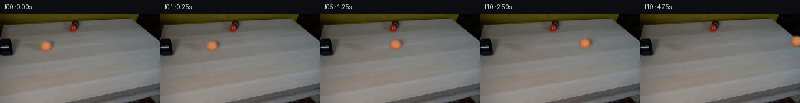

![首帧]()

Round 00
2026-11-04T19:48:23.457225+00:00像素候选变化代码 +204/−0inspection 更新
pixels 31170e1281cd3e28 · code 55d8c18964a26b12
查看本轮 generate.py 真实 diff
--- previous/generate.py
+++ current/generate.py
@@ -0,0 +1,204 @@
+"""Deterministic local pixel continuation; no model, network, or image viewer."""
+from pathlib import Path
+import json
+import numpy as np
+from PIL import Image, ImageDraw
+from scipy.ndimage import gaussian_filter, distance_transform_edt, map_coordinates
+from scipy.sparse import lil_matrix
+from scipy.sparse.linalg import spsolve
+from scipy.optimize import least_squares
+import artifact_io
+
+ROOT = Path(__file__).resolve().parent
+TMP = ROOT / '.tmp'
+TMP.mkdir(exist_ok=True)
+SOURCE = np.asarray(Image.open(ROOT / 'first_frame.png').convert('RGB')).copy()
+H, W = SOURCE.shape[:2]
+Y, X = np.mgrid[:H, :W]
+CX, CY = 73.0, 51.3
+RX, RY = 8.9, 8.0
+BLUR = 1.05
+
+
+def recover_table():
+ """Local discrete harmonic fill, with neighboring measured grain added inside."""
+ mask = (((X-74.5)/14.3)**2 + ((Y-51.1)/11.0)**2 < 1)
+ mask |= (((X-82.0)/9.1)**2 + ((Y-48.4)/8.6)**2 < 1)
+ ys, xs = np.where(mask)
+ ids = np.full((H, W), -1, dtype=int)
+ ids[ys, xs] = np.arange(len(xs))
+ matrix = lil_matrix((len(xs), len(xs)), dtype=float)
+ rhs = np.zeros((len(xs), 3))
+ for k, (y, x) in enumerate(zip(ys, xs)):
+ matrix[k, k] = 4
+ for yy, xx in [(y-1,x),(y+1,x),(y,x-1),(y,x+1)]:
+ if mask[yy,xx]:
+ matrix[k,ids[yy,xx]] = -1
+ else:
+ rhs[k] += SOURCE[yy,xx]
+ result = SOURCE.astype(float).copy()
+ result[ys,xs] = spsolve(matrix.tocsr(), rhs)
+ # Add only measured high-frequency wood variation, tapering at the fill boundary.
+ grain = SOURCE.astype(float) - gaussian_filter(SOURCE.astype(float), (1.1,1.7,0))
+ samples = grain[np.minimum(Y+29,H-1),X]
+ feather = np.clip(distance_transform_edt(mask)/3,0,1)
+ result += samples * feather[...,None] * .65
+ return np.clip(result,0,255), mask
+
+
+TABLE, REPAIR_MASK = recover_table()
+Image.fromarray(np.rint(TABLE).astype(np.uint8)).save(TMP/'recovered_table.png')
+# Work on a local source patch, so all stationary pixels remain exact.
+X0, Y0, PW, PH = 56, 35, 42, 38
+py, px = np.mgrid[Y0:Y0+PH, X0:X0+PW]
+scale = 6
+hy,hx = np.mgrid[:PH*scale,:PW*scale]
+hx = X0+(hx+.5)/scale-.5
+hy = Y0+(hy+.5)/scale-.5
+coverage = ((((hx-CX)/RX)**2+((hy-CY)/RY)**2)<1).astype(float)
+coverage = gaussian_filter(coverage, BLUR*scale)
+ALPHA = coverage.reshape(PH,scale,PW,scale).mean((1,3))
+
+# Infer a simple soft cast shadow from neutral darkening beyond the ball silhouette.
+src_local = SOURCE[Y0:Y0+PH, X0:X0+PW].astype(float)
+bg_local = TABLE[Y0:Y0+PH, X0:X0+PW]
+shadow_region = (ALPHA<.13)&(px>78)&(px<93)&(py>39)&(py<61)
+ratios = np.clip(1-src_local.mean(2)/np.maximum(bg_local.mean(2),1),0,.8)
+
+def shadow_field(q, xx=px, yy=py):
+ amp,cx,cy,sx,sy=q
+ return amp*np.exp(-.5*((xx-cx)/sx)**2-.5*((yy-cy)/sy)**2)
+
+fit = least_squares(lambda q:(shadow_field(q)-ratios)[shadow_region],
+ [.3,81.7,48.9,4.7,4.7],
+ bounds=([.08,79,44,2.5,2.5],[.55,86,54,7,7]))
+SHADOW_PARAMETERS = fit.x
+original_shadow = shadow_field(SHADOW_PARAMETERS)
+bg_shadow = bg_local*(1-original_shadow[...,None])
+
+# Fit fixed illumination in the source, then extract a small material residual.
+nx=(px-CX)/RX
+ny=(py-CY)/RY
+nz=np.sqrt(np.maximum(0,1-nx*nx-ny*ny))
+basis=np.stack([np.ones_like(nx),nz,nx,ny],-1)
+recovered=(src_local-bg_shadow*(1-ALPHA[...,None]))/np.maximum(ALPHA[...,None],.04)
+core=(ALPHA>.84)&(nx*nx+ny*ny<.75)
+coeff=np.linalg.lstsq(basis[core],recovered[core],rcond=None)[0]
+illumination=np.clip(basis@coeff,30,250)
… diff truncated; 117 more lines …